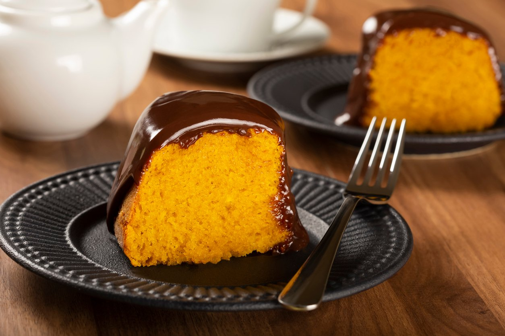

The Enchanting Carrot Cake

Its cover make it more irresistible
Why should you bake it
This Brazilian carrot cake with chocolate cover is a delightful combination of moist carrot cake and rich chocolate frosting. It's a classic treat enjoyed at many gatherings and celebrations in Brazil.
Ingredients for the cake
- 3 medium-sized carrots, peeled and grated
- 1 cup vegetable oil
- 3 large eggs
- 2 tablespoons unsalted butter, softened
- 2 cups all-purpose flour
- 2 cups granulated sugar
- 1 tablespoon baking powder
For the chocolate cover
- 4 tablespoons unsalted butter
- 4 tablespoons cocoa powder
- 6 tablespoons milk
- 2 cups powdered sugar
- 1 teaspoon vanilla extract
Instructions
- Preheat your oven to 350°F (180°C). Grease and flour a rectangular or round cake pan.
- In a blender or food processor, blend the grated carrots, eggs, and vegetable oil until smooth.
- In a large mixing bowl, combine the flour, sugar, and baking powder.
- Pour the carrot mixture into the dry ingredients and mix until well combined.
- Pour the batter into the prepared cake pan.
- Bake in the preheated oven for about 30-35 minutes or until a toothpick inserted into the center comes out clean.
- Remove the cake from the oven and let it cool completely.
For the chocolate cover
- In a saucepan over medium heat, melt the butter.
- Stir in the cocoa powder and milk, whisking continuously until well combined and smooth.
- Remove the saucepan from heat and gradually whisk in the powdered sugar until the frosting is smooth.
- Stir in the vanilla extract.
- Once the carrot cake has cooled, spread the chocolate cover evenly over the top of the cake.
- Allow the chocolate cover to set before slicing and serving.
Visit another recipes
Return to Main Page
Visit Carrot Cake
About